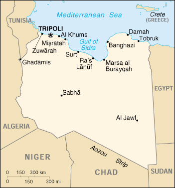

![[Country Flag of Libya]](../flags/ly-lgflag.jpg)
| Libya |
|
         |  | |
| Introduction |
Background: Since he took power in a 1969 military coup, Col. Muammar Abu Minyar al-QADHAFI has espoused his own political system - a combination of socialism and Islam - which he calls the Third International Theory. Viewing himself as a revolutionary leader, he used oil funds during the 1970s and 1980s to promote his ideology outside Libya, even supporting subversives and terrorists abroad to hasten the end of Marxism and capitalism. Libyan military adventures failed, e.g., the prolonged foray of Libyan troops into the Aozou Strip in northern Chad was finally repulsed in 1987. Libyan support for terrorism decreased after UN sanctions were imposed in 1992. Those sanctions were suspended in April 1999.
| Geography |
Location: Northern Africa, bordering the Mediterranean Sea, between Egypt and Tunisia
Geographic coordinates: 25 00 N, 17 00 E
Map references: Africa
Area:
total:
1,759,540 sq km
land:
1,759,540 sq km
water:
0 sq km
Area - comparative: slightly larger than Alaska
Land boundaries:
total:
4,383 km
border countries:
Algeria 982 km, Chad 1,055 km, Egypt 1,150 km, Niger 354 km, Sudan 383 km, Tunisia 459 km
Coastline: 1,770 km
Maritime claims:
territorial sea:
12 nm
note:
Gulf of Sidra closing line - 32 degrees 30 minutes north
Climate: Mediterranean along coast; dry, extreme desert interior
Terrain: mostly barren, flat to undulating plains, plateaus, depressions
Elevation extremes:
lowest point:
Sabkhat Ghuzayyil -47 m
highest point:
Bikku Bitti 2,267 m
Natural resources: petroleum, natural gas, gypsum
Land use:
arable land:
1%
permanent crops:
0%
permanent pastures:
8%
forests and woodland:
0%
other:
91% (1993 est.)
Irrigated land: 4,700 sq km (1993 est.)
Natural hazards: hot, dry, dust-laden ghibli is a southern wind lasting one to four days in spring and fall; dust storms, sandstorms
Environment - current issues: desertification; very limited natural fresh water resources; the Great Manmade River Project, the largest water development scheme in the world, is being built to bring water from large aquifers under the Sahara to coastal cities
Environment - international agreements:
party to:
Climate Change, Desertification, Marine Dumping, Nuclear Test Ban, Ozone Layer Protection
signed, but not ratified:
Biodiversity, Law of the Sea
| People |
Population:
5,115,450
note:
includes 162,669 non-nationals (July 2000 est.)
Age structure:
0-14 years:
36% (male 938,476; female 899,139)
15-64 years:
60% (male 1,595,306; female 1,485,069)
65 years and over:
4% (male 97,770; female 99,690) (2000 est.)
Population growth rate: 2.42% (2000 est.)
Birth rate: 27.68 births/1,000 population (2000 est.)
Death rate: 3.51 deaths/1,000 population (2000 est.)
Net migration rate: 0 migrant(s)/1,000 population (2000 est.)
Sex ratio:
at birth:
1.05 male(s)/female
under 15 years:
1.04 male(s)/female
15-64 years:
1.07 male(s)/female
65 years and over:
0.98 male(s)/female
total population:
1.06 male(s)/female (2000 est.)
Infant mortality rate: 30.08 deaths/1,000 live births (2000 est.)
Life expectancy at birth:
total population:
75.45 years
male:
73.34 years
female:
77.66 years (2000 est.)
Total fertility rate: 3.71 children born/woman (2000 est.)
Nationality:
noun:
Libyan(s)
adjective:
Libyan
Ethnic groups: Berber and Arab 97%, Greeks, Maltese, Italians, Egyptians, Pakistanis, Turks, Indians, Tunisians
Religions: Sunni Muslim 97%
Languages: Arabic, Italian, English, all are widely understood in the major cities
Literacy:
definition:
age 15 and over can read and write
total population:
76.2%
male:
87.9%
female:
63% (1995 est.)
| Government |
Country name:
conventional long form:
Socialist People's Libyan Arab Jamahiriya
conventional short form:
Libya
local long form:
Al Jumahiriyah al Arabiyah al Libiyah ash Shabiyah al Ishtirakiyah
local short form:
none
Data code: LY
Government type: Jamahiriya (a state of the masses) in theory, governed by the populace through local councils; in fact, a military dictatorship
Capital: Tripoli
Administrative divisions:
25 municipalities (baladiyat, singular - baladiyah); Ajdabiya, Al 'Aziziyah, Al Fatih, Al Jabal al Akhdar, Al Jufrah, Al Khums, Al Kufrah, An Nuqat al Khams, Ash Shati', Awbari, Az Zawiyah, Banghazi, Darnah, Ghadamis, Gharyan, Misratah, Murzuq, Sabha, Sawfajjin, Surt, Tarabulus, Tarhunah, Tubruq, Yafran, Zlitan
note:
the 25 municipalities may have been replaced by 13 regions
Independence: 24 December 1951 (from Italy)
National holiday: Revolution Day, 1 September (1969)
Constitution: 11 December 1969, amended 2 March 1977
Legal system: based on Italian civil law system and Islamic law; separate religious courts; no constitutional provision for judicial review of legislative acts; has not accepted compulsory ICJ jurisdiction
Suffrage: 18 years of age; universal and compulsory
Executive branch:
chief of state:
Revolutionary Leader Col. Muammar Abu Minyar al-QADHAFI (since 1 September 1969); note - holds no official title, but is de facto chief of state
head of government:
Secretary of the General People's Committee (Premier) Mubarak al-SHAMEKH (since 2 March 2000)
cabinet:
General People's Committee established by the General People's Congress
elections:
national elections are indirect through a hierarchy of people's committees; head of government elected by the General People's Congress; election last held NA (next to be held NA)
election results:
Mubarak al-SHAMEKH elected head of government; percent of General People's Congress vote - NA
Legislative branch: unicameral General People's Congress (NA seats; members elected indirectly through a hierarchy of people's committees)
Judicial branch: Supreme Court
Political parties and leaders: none
Political pressure groups and leaders: various Arab nationalist movements with almost negligible memberships may be functioning clandestinely, as well as some Islamic elements
International organization participation: ABEDA, AfDB, AFESD, AL, AMF, AMU, CAEU, CCC, ECA, FAO, G-77, IAEA, IBRD, ICAO, ICRM, IDA, IDB, IFAD, IFC, IFRCS, ILO, IMF, IMO, Inmarsat, Intelsat, Interpol, IOC, ISO, ITU, MONUC, NAM, OAPEC, OAU, OIC, OPEC, PCA, UN, UNCTAD, UNESCO, UNIDO, UPU, WFTU, WHO, WIPO, WMO, WToO
Diplomatic representation in the US: Libya does not have an embassy in the US
Diplomatic representation from the US: the US suspended all embassy activities in Tripoli on 2 May 1980
Flag description: plain green; green is the traditional color of Islam (the state religion)
| Economy |
Economy - overview: The socialist-oriented economy depends primarily upon revenues from the oil sector, which contributes practically all export earnings and about one-quarter of GDP. These oil revenues and a small population give Libya one of the highest per capita GDPs in Africa, but little of this income flows down to the lower orders of society. In this statist society, import restrictions and inefficient resource allocations have led to periodic shortages of basic goods and foodstuffs. The nonoil manufacturing and construction sectors, which account for about 20% of GDP, have expanded from processing mostly agricultural products to include the production of petrochemicals, iron, steel, and aluminum. Climatic conditions and poor soils severely limit farm output, and Libya imports about 75% of its food requirements. Higher oil prices in 1999 led to an increase in export revenues and helped to stimulate the economy. Following the suspension of UN sanctions in 1999, Libya has been trying to increase its attractiveness to foreign investors, and several foreign companies have visited in search of contracts.
GDP: purchasing power parity - $39.3 billion (1999 est.)
GDP - real growth rate: 2% (1999 est.)
GDP - per capita: purchasing power parity - $7,900 (1999 est.)
GDP - composition by sector:
agriculture:
7%
industry:
47%
services:
46% (1997 est.)
Population below poverty line: NA%
Household income or consumption by percentage share:
lowest 10%:
NA%
highest 10%:
NA%
Inflation rate (consumer prices): 18% (1999 est.)
Labor force: 1.2 million (1997 est.)
Labor force - by occupation: services and government 54%, industry 29%, agriculture 17% (1997 est.)
Unemployment rate: 30% (1998 est.)
Budget:
revenues:
$3.6 billion
expenditures:
$5.1 billion, including capital expenditures of $NA (1998 est.)
Industries: petroleum, food processing, textiles, handicrafts, cement
Industrial production growth rate: NA%
Electricity - production: 16.92 billion kWh (1998)
Electricity - production by source:
fossil fuel:
100%
hydro:
0%
nuclear:
0%
other:
0% (1998)
Electricity - consumption: 15.736 billion kWh (1998)
Electricity - exports: 0 kWh (1998)
Electricity - imports: 0 kWh (1998)
Agriculture - products: wheat, barley, olives, dates, citrus, vegetables, peanuts; beef, eggs
Exports: $6.6 billion (f.o.b., 1998 est.)
Exports - commodities: crude oil, refined petroleum products, natural gas
Exports - partners: Italy 40%, Germany 17%, Spain 12%, France 4%, Sudan 4%, UK 3% (1997)
Imports: $7 billion (f.o.b., 1998 est.)
Imports - commodities: machinery, transport equipment, food, manufactured goods
Imports - partners: Italy 23%, Germany 12%, UK 9%, France 7%, Tunisia 5%, Belgium 4% (1997)
Debt - external: $4 billion (1998 est.)
Economic aid - recipient: $8.4 million (1995)
Currency: 1 Libyan dinar (LD) = 1,000 dirhams
Exchange rates: Libyan dinars (LD) per US$1 - 0.4687 (January 2000), 0.4616 (1999), 0.3785 (1998), 0.3891 (1997), 0.3651 (1996), 0.3532 (1995); official rate: 0.45 (December 1998)
Fiscal year: calendar year
| Communications |
Telephones - main lines in use: 318,000 (1995)
Telephones - mobile cellular: NA
Telephone system:
telecommunications system is being modernized; mobile cellular telephone system became operational in 1996
domestic:
microwave radio relay, coaxial cable, cellular, tropospheric scatter, and a domestic satellite system with 14 earth stations
international:
satellite earth stations - 4 Intelsat, NA Arabsat, and NA Intersputnik; submarine cables to France and Italy; microwave radio relay to Tunisia and Egypt; tropospheric scatter to Greece; participant in Medarabtel (1999)
Radio broadcast stations: AM 17, FM 4, shortwave 3 (1998)
Radios: 1.35 million (1997)
Television broadcast stations: 12 (plus one low-power repeater) (1997)
Televisions: 730,000 (1997)
Internet Service Providers (ISPs): NA
| Transportation |
Railways:
note:
Libya has had no railroad in operation since 1965, all previous systems having been dismantled; current plans are to construct a 1.435-m standard gauge line from the Tunisian frontier to Tripoli and Misratah, then inland to Sabha, center of a mineral-rich area, but there has been little progress; other plans made jointly with Egypt would establish a rail line from As Sallum, Egypt, to Tobruk with completion originally set for mid-1994; Libya signed contracts with Bahne of Egypt and Jez Sistemas Ferroviarios in 1998 for the supply of crossings and pointwork
Highways:
total:
83,200 km
paved:
47,590 km
unpaved:
35,610 km (1996 est.)
Waterways: none
Pipelines: crude oil 4,383 km; petroleum products 443 km (includes liquefied petroleum gas or LPG 256 km); natural gas 1,947 km
Ports and harbors: Al Khums, Banghazi, Darnah, Marsa al Burayqah, Misratah, Ra's Lanuf, Tobruk, Tripoli, Zuwarah
Merchant marine:
total:
27 ships (1,000 GRT or over) totaling 401,303 GRT/656,632 DWT
ships by type:
cargo 9, chemical tanker 1, liquified gas 3, petroleum tanker 6, roll-on/roll-off 4, short-sea passenger 4 (1999 est.)
Airports: 142 (1999 est.)
Airports - with paved runways:
total:
59
over 3,047 m:
24
2,438 to 3,047 m:
6
1,524 to 2,437 m:
22
914 to 1,523 m:
5
under 914 m:
2
Airports - with unpaved runways:
total:
83
over 3,047 m:
5
2,438 to 3,047 m:
2
1,524 to 2,437 m:
15
914 to 1,523 m:
42
under 914 m:
19 (1999 est.)
| Military |
Military branches: Army, Navy, Air and Air Defense Command
Military manpower - military age: 17 years of age
Military manpower - availability:
males age 15-49:
1,415,305 (2000 est.)
Military manpower - fit for military service:
males age 15-49:
841,039 (2000 est.)
Military manpower - reaching military age annually:
males:
62,200 (2000 est.)
Military expenditures - dollar figure: $NA
Military expenditures - percent of GDP: NA%
| Transnational Issues |
Disputes - international: maritime boundary dispute with Tunisia; Libya claims about 19,400 sq km in northern Niger and part of southeastern Algeria